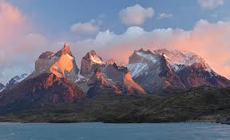

The Andes are the longest mountain range in the world.
Located along the entire western coast of South America, the Andes mountain range is about 7,000 kilometers (4,300 miles) long, about 200 to 700 kilometers (120 to 430 miles) wide.
Along their length, the Andes are split into several ranges, which are separated by intermediate depressions.

The Andes extend from north to south through seven South American countries: Venezuela, Colombia, Ecuador, Peru, Bolivia, Chile, and Argentina.
The Andes are the world’s highest mountain range outside of Asia.
The average height of Andes Mountains is approximately 4,000 meters (13,000 feet).
The highest elevation in the Andes is Mount Aconcagua in Argentina, which is 6,961 meters (22,838 feet) above sea level. It is the highest mountain outside Asia.
Many Andean peaks are volcanic. Some are inactive. But others still erupt at times.
The world’s highest volcano is in the Andes, Ojos del Salado on the Chile-Argentina border, which rises to 6,893 meters (22,615 feet).